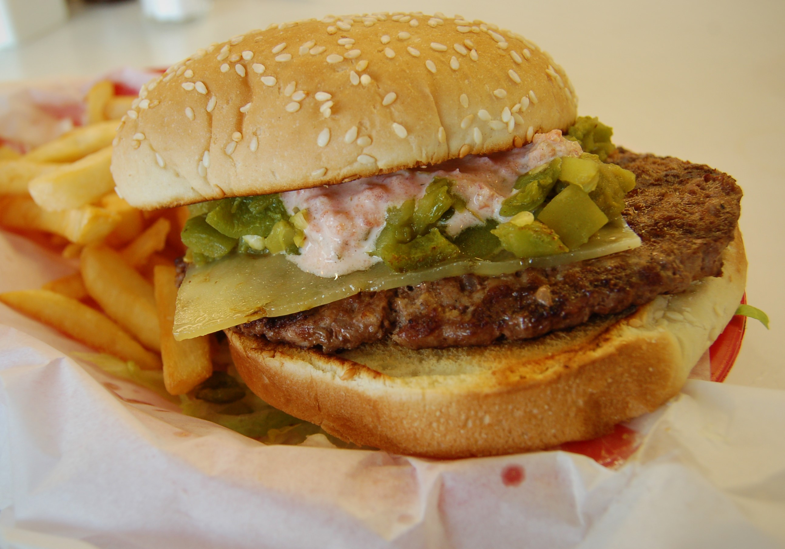

Green Hatch Chili Burger

Description
This Green Chili Burger really lets the Hatch Chilis shine through! It's an amazing recipe for summer-time!
Ingredients
- Brioche Buns
- Onions
- Kosher Salt
- Black Pepper
- Roasted Hatch Chilis
- Ground Beef
- Cheddar Cheese
- Dice up the Hatch Chilis, Onions, and mix them into your Ground Beef alongside salt and pepper.
- Portion the meat into 3.5-4oz balls, and flatten them into thin patties.
- Get your grill as hot as possible and cook the patties until they have a slight crust and browning, top with cheese and let it melt before removing the patties.
- Combine the rest of your Hatch Chilis and Onions very finely and add salt and pepper, lime juice, and olive oil.
- Top the burger with your onion and hatch chili mixture, serve with two patties.